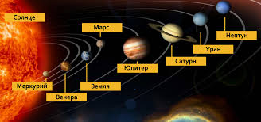
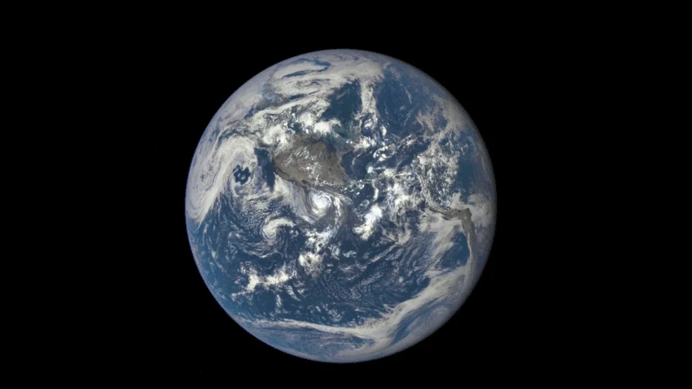
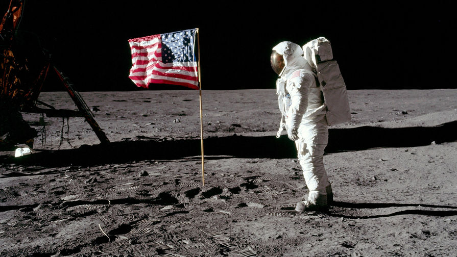
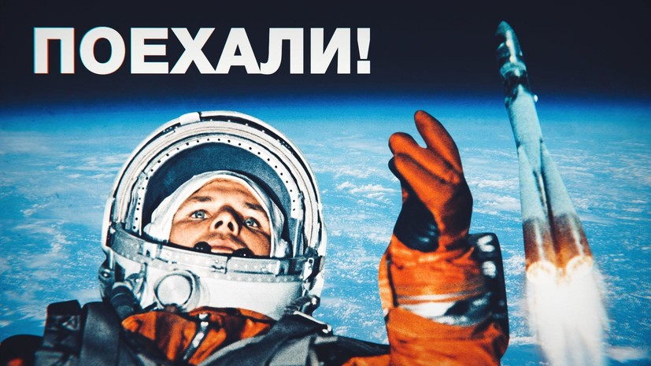
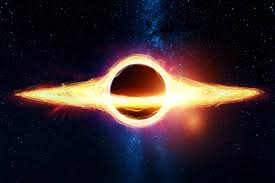
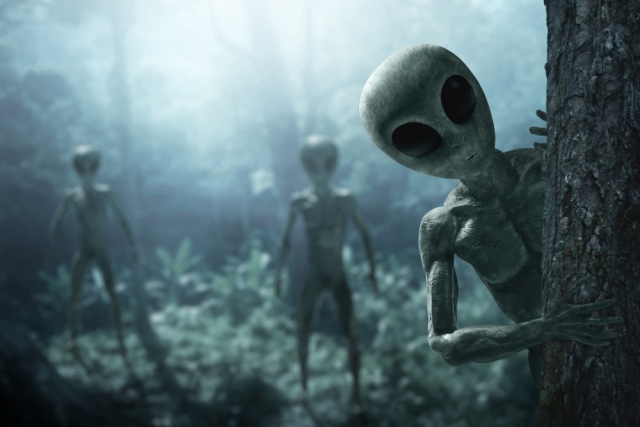

Космос,космическое пространство — относительно пустые участки Вселенной, которые лежат вне границ атмосфер небесных тел.
Космос не является абсолютно пустым пространством: в нём есть, хотя и с очень низкой плотностью, межзвёздное вещество
(преимущественно ионы и атомы водорода), космические лучи и электромагнитное излучение, а также гипотетическая тёмная материя.

Солнечная система
Со́лнечная система — планетная система, включающая в себя центральную звезду Солнце и все естественные космические объекты
на гелиоцентрических орбитах. Она сформировалась путём гравитационного сжатия газопылевого облака примерно 4,57 млрд лет назад.

Земля
Земля́ — третья по удалённости от Солнца планета Солнечной системы. Самая плотная, пятая по диаметру и массе среди всех планет
Солнечной системы и крупнейшая среди планет земной группы, в которую входят также Меркурий, Венера и Марс. Единственное известное
человеку в настоящее время тело во Вселенной, населённое живыми организмами.

Спутник Земли-Луна
Луна́ — единственный естественный спутник Земли. Самый близкий к Солнцу спутник планеты, так как у ближайших к Солнцу планет (Меркурия
и Венеры) их нет. Второй по яркости объект на земном небосводе после Солнца и пятый по величине естественный спутник планеты Солнечной
системы. Среднее расстояние между центрами Земли и Луны — 384 467 км.

Первые шаги на луне
Полёт состоялся 16—24 июля 1969 года. Экипаж состоял из трёх человек: Нил Армстронг (командир), Эдвин Олдрин (пилот лунного модуля)
и Майкл Коллинз (пилот командного модуля). 20 июля Армстронг и Олдрин совершили посадку в Море Спокойствия. Они оставались на Луне
более 21 часа, совершив один выход на её поверхность.

Первый полет в космос
12 апреля 1961 года состоялся первый полет человека в космос, который совершил Юрий Гагарин — советский гражданин. Это историческое
событие открыло путь для исследования космического пространства на благо всего человечества.

Черная дыра
Чёрная дыра́ - область пространства-времени, гравитационное притяжение которой настолько велико, что покинуть её не могут даже объекты,
движущиеся со скоростью света, в том числе кванты самого света. Граница этой области называется горизонтом событий. В простейшем случае
сферически симметричной чёрной дыры он представляет собой сферу с радиусом Шварцшильда, который считается характерным размером чёрной дыры.

Планеты Солнечной системы
В Солнечной системе нам известно 9 больших планет, по порядку от Солнца это:

Уран
Инопланетяне
Инопланетя́нин, прише́лец (с других планет, из космоса) — гипотетическое разумное существо внеземного происхождения, персонаж
массовой ультуры,в том числе художественных произведений, уфологии, конспирологии (в частности, о вторжении инопланетян)
и некоторых новых религиозных движений.Представления об инопланетянах в массовой культуре являются современными мифами,
связанными с внерелигиозными верованиями, составляют мифологию космического века/ Термин «инопланетяне» придуман одним из
основоположников советской научной фантастики Александром Казанцевым.
